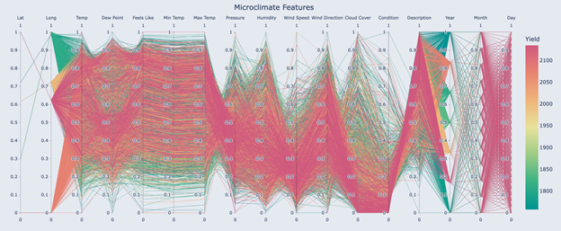
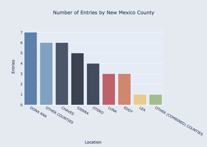
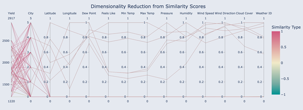
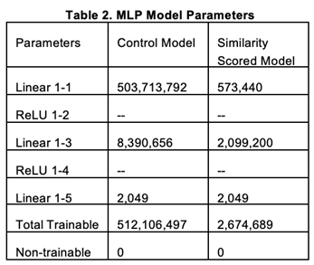
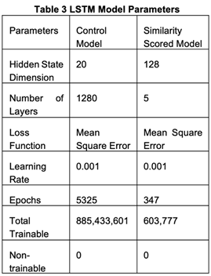
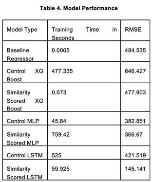

AI Enhanced Agricultural Forecasting: Dimensionality Reduction and Similarity Metrics for Predicting Crop Yields in Sparse Data Microclimates
1Leif Huender, 2Mary Everett, 2John Shovic
1North Idaho College 1000 W Garden Ave, Coeur d'Alene, ID 83814, United States
2Department of Computer Science, Moscow. University of Idaho, 875 Perimeter Drive, Moscow, ID, 83844, USA
A paper from the Proceedings of the
16thInternational Conference on Precision Agriculture
21-24 July 2024
Manhattan, Kansas, United States
Abstract.
This study explores and develops new methodologies for predicting agricultural outcomes, such as crop yields, in microclimates characterized by sparse meteorological data. Specifically, it focuses on reducing the dimensionality in time series data as a preprocessing step to generate more straightforward and more explainable forecast models. Dimensionality reduction helps manage large data sets by simplifying the information into more manageable forms without significant loss of information. We explore and utilize various 'similarity' metrics, including Kullback-Leibler Divergence, Euclidean Distance, Manhattan Distance, Cosine Similarity, Pearson Correlation, and Spearman Rank Correlation. These metrics help identify patterns and relationships across different microclimate features for locations and seasons (time and space dimensions). We analyze continuous, temporally aligned data streams from distinct geographic locations to assess the similarity of weather features like temperature, humidity, and cloud cover. Our similarity scoring method involves comparing long-term weather patterns to identify common traits that might influence crop yields. This information gets used as input for multiple machine learning techniques, ranging from small classical models to advanced approaches like Long Short-Term Memory networks. The study employs high-dimensional temporal datasets from four geographic regions in New Mexico (Otero, Sierra, Doña Ana, and Chaves) as input data, with pecan crop yields as the outcome of interest. Our models suggest a predictive link between similar microclimates and agricultural outcomes like crop yield. Moving forward, we propose future avenues of research to refine these predictive models. We also propose to study a new Mixture of Experts architecture, which combines insights from various specialized models to provide more precise and localized predictions across different agricultural regions. This research, still in its early stages, holds promise for improving forecasting practices in agriculture.
Keywords.
Similarity metrics, Machine learning, Long Short-Term Memory (LSTM), Kullback-Leibler Divergence, Euclidean Distance, Manhattan Distance, Cosine Similarity, Pearson Correlation, Spearman Rank Correlation, Meteorological data
Introduction
Agriculture contributes to an essential part of the global economy, providing resources such as food, fiber, and fuel to sustain human life. In places like India, it accounts for 18% of national income and 54% of employment (Alston & Pardey, 2014). The success of agricultural endeavors is intrinsically linked to many factors, among which climate plays a pivotal role. Climate variables such as temperature, humidity, and precipitation significantly influence crop growth, development, and yields (Lin, 2007). Therefore, understanding and accurately predicting the relationship between climate and agricultural outcomes is vital for optimizing farming practices, improving productivity, and guaranteeing food security.
One of the challenges in agricultural forecasting is the variability of microclimates—localized climate conditions that can differ significantly from the broader regional climate. Identifying and understanding these microclimates can provide valuable insights into crop performance under diverse environmental conditions (Gardner et al., 2021). This study uses similarities between geographically distinct microclimates to improve predictive models for agricultural outcomes, specifically crop yields.
Dimensionality reduction in time series data is a preprocessing step to simplify complex datasets, making them more manageable and interpretable without substantial information loss. Various similarity metrics, including Kullback-Leibler Divergence, Euclidean Distance, Manhattan Distance, Cosine Similarity, Pearson Correlation, and Spearman Rank Correlation, are utilized to identify patterns and relationships across different microclimate features over both spatial and temporal dimensions.
In this study, we analyze continuous, temporally aligned meteorological data streams from four distinct geographic locations to assess the similarity of weather features such as temperature, humidity, and cloud cover. We aim to identify common traits that may influence crop yields by comparing long-term weather patterns.
We apply these insights as inputs for various machine learning models, ranging from traditional statistical methods to advanced techniques like Long Short-Term Memory (LSTM) neural networks. These models can handle complex, high-dimensional data and generate meaningful predictions (Klompenburg et al., 2020). The study utilizes high-dimensional temporal datasets from four geographic regions in New Mexico (Otero, Sierra, Doña Ana, and Chaves), with pecan crop yields as the primary outcome of interest. Despite the limited dataset—22 total outcome spanning six years across the top four locations in New Mexico—preliminary models demonstrate a predictive relationship between similar microclimates and agricultural outcomes.
This research is still in its early stages, yet it shows promise for improving forecasting practices in agriculture. Future work will focus on refining these predictive models, defining new methods for deploying similarity metrics as new dimensions to data and exploring a new Mixture of Experts architecture, which integrates insights from specialized models to deliver more accurate and localized predictions for different agricultural regions. By advancing our understanding of microclimate similarities and their impact on crop yields, this study aims to contribute to the development of more reliable and precise agricultural forecasting methods.
Methods
Data Source and Description
This study's primary datasets are from two distinct sources, each offering unique insights into different aspects of agricultural forecasting. The crop yield data, specifically for pecans, were sourced from the United States Department of Agriculture's National Agricultural Statistics Service (NASS) via their Quick Stats database (https://quickstats.nass.usda.gov/). This repository provides detailed, county-level agricultural yield data across various crops, which is recorded annually. The sparse amounts of available data motivated the choice of pecan crop yield data, making it a prime candidate for finding new methodologies that can open access to farmers with less available data for their crops.
We received the meteorological data from the Open Weather API (https://openweathermap.org/), a service that offers extensive meteorological observations updated hourly. This dataset includes various weather variables central for agricultural analysis, such as latitude, longitude, dew point, perceived temperature, minimum and maximum temperatures, humidity, wind speed, wind direction, cloud cover, and a general weather identification code. These features were selected for their direct impact on crop growth and yield outcomes, providing a comprehensive environmental snapshot for modeling microclimatic effects on agricultural productivity 
Fig 1. Microclimate Features
The study focused on four New Mexico regions: Dona Ana, Chaves, Sierra, and Otero. These regions were selected based on the availability of longer-spanning yield data. While still sparse, these locations had the most yield data available for pecans. The choice of these locations also allows for a diverse examination of microclimatic impacts across different geographic profiles, enhancing the generalizability of the forecasting models developed. A graphic visualization of these feature with a normalization applied to each feature can be seen in Figure 1.
|
Fig 2. Number of Yield Entries By New Mexico County
|
The graph below in Figure 2 illustrates the distribution of data entries available for each county, revealing the extent of data coverage and the basis for comparative analysis across the regions. Dona Ana leads with seven entries, Chaves with six, Sierra with five, and Otero with four, culminating in 22 data points.
This data selection approach helps guarantee that the developed models are grounded in reliable datasets, facilitating accurate predictions and insights into the intricate relationship between weather conditions and agricultural outputs.
Temporal Alignment and Feature Selection
Precise temporal alignment of the four meteorological data streams was critical due to the sensitivity of similarity scores to timing discrepancies (Xu & Beard, 2021). Even a single day's misalignment could significantly distort the perceived similarities between the locations. Additionally, some weather features exhibited substantial data gaps, with less than 60% data availability. Features with insufficient data, including visibility, wind gusts, and various precipitation measurements (rain one hour, rain three hours, snow one hour, snow three hours), were excluded from the analysis to maintain robustness and reliability.
Yield Data Preparation
The yield data required minimal cleaning, as the county and the yield measured in pounds per acre were the primary variables of interest. This straightforward dataset allowed us to focus on analyzing the meteorological influences without the complication of extraneous data points.
Dataset Construction for Model Building
To find the optimal combination of features for predictive accuracy, we constructed several datasets to fit the needs of the different predictive models:
· Dataset 1: This dataset contains pecan yields from two counties with similarity scores derived from various metrics, aiming to directly link microclimate similarities with yield outcomes. It consists of 198 county-to-county comparisons based on seven similarity metrics, with rows containing mostly empty or infinite values removed. The dataset features 15 columns: 13 for each weather-features similarity score, one column for the label of each score, and another for the labels identifying the county pairs. The output shape is (198,), representing the yield values corresponding to the county comparisons.
· Dataset 2: We processed the meteorological data by averaging each feature over the 24-hour periods within each day, reducing the total data instances from 192,840 to 2,557. The input shape is (2557, 17), where '2557' denotes the daily aggregated instances, and '17' represents the features: 16 are daily meteorological data and one is the averaged similarity score for that location. The output shape (2557,) corresponds to the annual yield of each location. Data normalization was performed using Min-Max scaling to ensure all features are proportionally scaled between 0 and 1, improving model learning efficiency.
· Dataset 3: This dataset consolidates an entire year's worth of meteorological data into a single array for each location, paired with the respective annual yield. The input has a final shape of (22, 122,976), with '22' representing the number of years covered for the four locations, and '122,976' the total count of weather features for the year, flattened into an array. The output shape is (22,), indicating the yield values for each year. Min-max scaling was also applied here to normalize the data, aiming to improve model performance by standardizing feature scales.
Similarity Scoring
Seven similarity scoring metrics were employed to assess the relationships between meteorological data across diverse geographic locations in New Mexico. These metrics fall into three categories: vector-based similarities, correlation-based similarities, and information-theoretic similarity. Each category and metric was chosen based on its potential to uncover meaningful patterns within the data that are relevant to predicting agricultural outcomes like crop yields.
Vector-Based Similarities:
Cosine Similarity: This metric measures the cosine of the angle between two vectors, emphasizing their orientation rather than magnitude. It is instrumental in environments where the scale of data varies significantly, but the direction of data points is more critical for similarity. In weather data, where absolute values might differ but trends over time align, cosine similarity can effectively show these parallel patterns (Zhu & Zhang, 2020).
Euclidean Distance: Euclidean Distance measures the straight-line distance between two points in Euclidean space and is commonly used to detect fine-grained differences in data like temperature or humidity levels. However, in high-dimensional data spaces, this metric can become less effective as the 'curse of dimensionality' causes distances between points to become uniformly similar, thereby potentially distorting true distances and diminishing the metric's ability to discern distinct data points effectively (Steinbach et al, Nd).
Manhattan Distance: This metric computes the sum of the absolute differences between coordinates in a vector space, which can be particularly effective in meteorological forecast analysis where each dimension—representing different forecast parameters—contributes to the overall quality assessment. By emphasizing variability across dimensions rather than the diagonal path, Manhattan Distance provides a robust metric that is less influenced by extreme variations in any single dimension, making it suitable for evaluating the complexity of weather forecasts (Stein, 2011).
Correlation-Based Similarities:
Pearson Correlation Coefficient: This metric measures the linear relationship between datasets and is effectively applied in various scientific studies, including meteorological parameter analysis for solar energy prediction. It has proven useful in identifying key weather parameters that significantly correlate with solar power generation, such as air temperature and cloud opacity. While Pearson Correlation is valuable for determining linear associations, it's important to consider the nature of the data, as certain distributions or extreme values can influence the outcomes of this statistical method (Tan et al., 2024).
Spearman Rank Correlation: This non-parametric measure assesses how well the relationship between two variables can be described using a monotonic function. It is especially suitable for meteorological data as it does not assume a normal distribution and is less sensitive to outliers, thus providing a more robust analysis of ordinal or ranked data.
Kendall Tau Rank Correlation: Kendall Tau Rank Correlation, like Spearman, is effective for analyzing data with ties or ordinal nature, making it suitable for meteorological data that is often categorized or ranked, such as wind speed ranges. In contexts like those studied by Ngah Nasaruddin et al. (2021), where weather conditions like temperature and humidity are correlated with energy consumption, understanding the relationships between ranked or grouped data is key for accurate analysis and forecasting.
Information Theoretic Similarity:
Kullback-Leibler Divergence: Kullback-Leibler Divergence quantifies the divergence between one probability distribution and another, making it a valuable measure for assessing the 'distance' between different distributions, such as those in meteorological phenomena (Weijs et al., 2010). While insightful, its asymmetric nature does imply that care must be taken when interpreting results, especially considering its susceptibility to infinite values when comparing against zero probabilities.
Applicability and Observations
Our study utilized these metrics across 546 observations, calculated by evaluating each of the seven metrics across thirteen features for six location pairs. Our comprehensive exploration aimed to identify the most predictive features and similarity measures, enhancing the model's ability to forecast crop yields while reducing data dimensionality.
Correlation-based metrics (Pearson, Spearman, and Kendall Tau) generally proved the most effective, capturing the linear and ordinal relationships necessary for predicting agricultural outcomes. These metrics help to reveal how tightly linked meteorological variables are across different regions, which aids in understanding how similar weather patterns could predict similar crop yields.
Conversely, while applicable in specific contexts, vector-based metrics showed variable effectiveness. Euclidean and Manhattan distances were particularly good at highlighting absolute differences in climate data, which could be critical when precise measurements affect crop outcomes. However, their sensitivity to outliers and the measurement scale could have improved their utility in our analysis.
Kullback-Leibler Divergence offered little insight into the distributional differences between data sets. It was impractical because it tends to produce infinite values when encountering zeros in the data, which could occur with certain weather variables.
Visual Representation and Further Analysis
To visually represent the effectiveness and distinctions between these metrics, we included a parallel coordinate graph in Figure 3 below that illustrates the degree of similarity each method found when analyzing each geographic location against each other. This visualization helps quickly identify metrics most informative for specific features and regions, providing a clear path for model refinement. By integrating these similarity scores into our predictive models, we aim to deepen our understanding of how microclimate characteristics influence pecan yields.

Figure 3. Dimensionality Reduction from Similarity Scores
Data Pipeline
In developing our predictive models, we implemented a strategic approach to data partitioning to optimize model training, validation, and testing. The datasets were systematically divided to guarantee robust training and accurate evaluation while preventing overfitting.
Data Splitting Strategy
Standard Split for Model Development: For most models, the data was partitioned into three segments: 80% for training, 16% for validation, and 4% for testing. This distribution was chosen based on the following considerations:
Training Data (80%): This substantial portion allows the models to learn as comprehensively as possible from various examples, covering a more comprehensive range of scenarios and variability within the data. A more extensive training set is essential for complex models, especially in cases involving nuanced meteorological data where the patterns might take time to appear.
Validation Data (16%): Validation is an intermediate check during model training. It is used to fine-tune model parameters, adjust learning rates, and make decisions about model iterations. This relatively large validation set confirms that the model generalizes well over different data sets and helps mitigate the overfitting problem.
Testing Data (4%): The testing set is smaller, as it is used solely to evaluate the model's performance after the model parameters have been finalized. This phase is critical as it objectively evaluates a model's predictive power on unseen data, reflecting its potential real-world performance.
Adjusted Split for Specific Models: Some models, notably simpler, did not require a separate validation set. For these models, we split the data into 80% for training and 20% for testing. The rationale for this adjusted split includes. Increased Testing Data (20%): Providing more data for testing allows for a more thorough evaluation of the model's performance across a broader set of unseen examples. This is particularly important for simpler models ensure their simpler hypotheses remain under varied conditions. The validation step can be omitted in models where hyperparameter tuning is minimal or unnecessary. The omission of the validation step typically applies to less complex models or where the risk of overfitting is lower due to the algorithm's nature or the dataset's scale.
Implications of Data Splitting
The chosen data partitioning strategies were pivotal in balancing the need for thorough training and the necessity of unbiased model evaluation. This approach maximizes learning from the available data and maintains the integrity and reliability of the model evaluation process. By strategically allocating data to training, validation, and testing phases, we can safeguard that our models are well-trained, generalizable, and robust against overfitting, which is vital for deploying these models in real-world agricultural forecasting (Gopinath et al., 2021).
Models
Baseline Regressor
In our model evaluation process, we employed a Baseline Regression Model as an initial step, which predicts the mean of the training target values. This approach is intended to provide a straightforward benchmark for assessing the performance of more complex predictive models. However, it's important to recognize, as discussed by Glymour et al. (2005), that while such baseline models are useful for establishing a comparative standard, they may also introduce biases. Specifically, adjustments for baseline values. Which stresses the importance of careful interpretation and application of baseline adjustments in predictive modeling.
Purpose and Utility
The primary utility of the Baseline Regressor is to establish a fundamental performance level that more sophisticated models must exceed to demonstrate improved predictive power. This is especially pertinent in fields requiring nuanced data interpretation, such as predictive modeling in agriculture or health sciences. Glymour et al. (2005) cautions that adjustments based on baseline model outputs must be critically evaluated to distinguish genuine improvements from those attributable to methodological biases, emphasizing the potential for baseline adjustments to misrepresent actual effects under certain conditions.
Methodology
Normalization:
Prior to training, our dataset underwent normalization, a data scaling technique where the mean value from each feature in the training set was subtracted from its corresponding feature values. This standard practice centers the feature distribution around a zero mean, needed for eliminating model biases associated with natural variance in the features. Normalization facilitates feature comparability on a similar scale, enhancing the stability and performance of learning algorithms. This approach is particularly beneficial in complex predictive modeling as highlighted by Ahsan et al. (2021), the substantial impact of various data scaling techniques, including normalization, on and accuracy of machine learning models.
Prediction Strategy: The Baseline Regressor's strategy is straightforward—it calculates and uses the mean of the target values from the training dataset as the predicted value for all instances. This approach, while simplistic, is instrumental in establishing the minimal expected performance level for any predictive model.
Performance Metrics
Training Time: The Baseline Regressor's simplicity is reflected in its exceptionally short training time, recorded at merely 0.0005 seconds running on an AMD Ryzen 9 5950X 16-Core Processor. This efficiency shows the model's role as a fundamental benchmark rather than a sophisticated predictive tool.
Root Mean Squared Error (RMSE): The performance of the Baseline Regressor was quantitatively assessed using the RMSE, which measures the average magnitude of the prediction errors. The RMSE for the Baseline Regressor was 484.535, indicating the average error between the predicted and actual values. This metric provides a reference point for evaluating the effectiveness of more advanced models. A significant reduction in RMSE in subsequent models would demonstrate the value of incorporating complex algorithms and data preprocessing techniques (Kogan et al., 2013).
Implications
Using a Baseline Regression is a standard methodological approach in model development. It offers a clear benchmark for the predictive accuracy that more sophisticated models must exceed (Glymour et al., 2005). By comparing the performance of advanced models against this simple baseline, we can more effectively measure the incremental benefits of employing complex machine learning techniques and various data preprocessing methods.
XG Boost (Extreme Gradient Boosting)
Extreme Gradient Boosting (XG Boost) is a machine-learning algorithm with a gradient-boosting framework (Chen & Guestrin, 2016). Our study employed XG Boost for regression tasks to predict agricultural yields based on meteorological data (Li et al., 2023). The model operates by sequentially building decision trees, with each tree attempting to correct the errors made by its predecessors. The final prediction is the weighted sum of the predictions from all trees in the ensemble, which improves the model's ability to generalize across complex datasets.
Model Configuration and Training
For the control model, we utilized Dataset 3, which includes the entire year's meteorological data flattened into an array and matched with corresponding yield data. We optimized the model using the following parameters (see Table 1).
 The
training of this control setup required 477.335 seconds on the AMD Ryzen 9
5950X 16-Core Processor, resulting in a Root Mean Squared Error (RMSE) of
646.427. Surprisingly, this RMSE was worse than the simple baseline regressor,
suggesting that the model might not be suited to learn the relatively small
dataset size (only 22 entries), leading to overfitting despite the
regularization and subsampling strategies.
The
training of this control setup required 477.335 seconds on the AMD Ryzen 9
5950X 16-Core Processor, resulting in a Root Mean Squared Error (RMSE) of
646.427. Surprisingly, this RMSE was worse than the simple baseline regressor,
suggesting that the model might not be suited to learn the relatively small
dataset size (only 22 entries), leading to overfitting despite the
regularization and subsampling strategies.
Model Optimization Using Similarity Metrics
To explore the potential of using similarity metrics to improve model performance, we employed Dataset 1. To optimize XG Boost's settings for this dataset, a grid search over 32,400 parameter combinations was conducted across 5-fold cross-validation, totaling 162,000 fits. This exhaustive search identified the most influential parameters (see Table 1) (Yang et al., 2020).
The optimized model trained with these parameters achieved an RMSE of 477.903. The training process was remarkably faster, taking only 0.073 seconds, 6538 times quicker than the control model. This significant reduction in training time, combined with a notable improvement in RMSE compared to the control (26.07% better than the control model and 1.368% improvement over the baseline regressor), suggests that leveraging similarity metrics can be highly beneficial, especially in contexts where data is sparse but pattern rich.
MLP (Multi-Layer Perceptron)
The Multi-Layer Perceptron (MLP) is a fully connected neural network, a foundational architecture in modern machine learning. Each layer in an MLP consists of neurons fully connected to all activations in the previous layer, and its outputs are calculated by applying a nonlinear activation function to the weighted sums of its inputs. This design allows MLPs to learn complex, nonlinear relationships in the data, making them suitable for various predictive modeling tasks (Khan et al., 2021).
However, MLPs can struggle with sparse datasets, where the number of data points is limited relative to the complexity of the model. Sparse data-trained MLPs often lead to underfitting, where the model fails to utilize its full capacity and learns an overly simplified representation of the data. This is particularly problematic in high-dimensional data contexts, as highlighted by Krishnan et al. (2018), who demonstrated that standard training algorithms for inference networks result in underfitting when applied to sparse datasets.
Model Training and Architecture
Control Model: The control MLP we trained using Dataset 3 over 1,000 epochs, allowing sufficient time for the network to adjust its weights and biases to minimize the prediction error. The training was executed on a Nvidia 4090 GPU, resulting in a training time of 45.84 seconds. The architecture of the MLP, as outlined in the referenced figure, was designed to balance complexity with performance to prevent overfitting while maintaining the capacity to capture significant patterns in the data. The control model's final Root Mean Squared Error (RMSE) was 382.851.
Similarity Score Model: An alternative MLP configuration we trained using Dataset 1. The model followed the same architecture as the control but was subjected to a more extended training duration of 759.42 seconds due to the nuanced nature of the data it processed. The extended training period was necessary to adequately learn from the enriched, yet complex input data provided by the similarity scores. This model achieved an RMSE of 366.67, indicating a 24.32% improvement in accuracy over the baseline regressor and a 4.23% improvement over the control MLP. See Table 2 for more information about the model parameters.
Performance Analysis and Implications
The improvement in RMSE by the similarity score model over both the baseline regressor and the control MLP shows the potential benefits of incorporating processed similarity metrics into the training data. This approach improves the model's ability to discern and generalize from underlying patterns in complex meteorological datasets, suggesting a promising direction for further research. The results advocate for continued exploration into optimized architectures and training strategies that leverage similarity scores to boost predictive performance in sparse data scenarios. By refining the MLP's architecture and training on datasets enriched with similarity metrics, we aim to harness further the network's capacity to model complex interactions effectively and deliver more accurate predictions for agricultural outcomes.
LSTM (Long Short-Term Memory Networks)
Long-short-term memory Networks (LSTMs) are specialized Recurrent Neural Networks (RNNs) designed to address the vanishing gradient problem commonly encountered in traditional RNNs, especially when processing sequences with long-term dependencies. By incorporating memory cells that can maintain information in memory for long periods, LSTMs are ideally suited for analyzing time-series data or any sequential data where the timing and order of events are critical (Lindemann et al., 2021).
Model Configurations and Training
Control Model Configuration:
Dataset: We trained the control LSTM using Dataset 3, which comprises comprehensive year-long meteorological data transformed into sequences to reflect temporal dynamics.
Architecture: The network architecture included 20 layers with a high hidden state dimension of 1280, designed to capture complex patterns and dependencies in the data. This extensive network aimed to learn the detailed features presented in the sequential data.
Training Details: The model training was executed on the same Nvidia 4090 GPU, running for 5325 epochs, which took 525 seconds. Such extensive training was necessary to refine the model's weights across numerous layers and data points. See Table 3 for more details. Performance: The final model achieved an RMSE of 421.519, which serves as a baseline for evaluating the effectiveness of LSTM in handling complex time-series data.
Similarity Scored Model Configuration:
Dataset: The Similarity Scored LSTM was trained using Dataset 2.
Optimization Approach: For the similarity-scored LSTM, we implemented a custom grid search to determine the optimal set of hyperparameters, focusing on a model configuration that balances performance with computational efficiency.
Model Training: This model was configured with a more streamlined architecture, consisting of only five layers and a hidden size of 128, reflecting a design prioritizing generalization and speed. Over 846 models were evaluated during the grid search, with the best-performing model chosen based on its RMSE and computational efficiency.
Training Details: Training took 59.925 seconds, dramatically faster than the control model. This demonstrates the benefits of a more optimized model structure in speed without compromising the learning capability. See Table 3 for more details.
Performance: This optimized model yielded an RMSE of 145.141, demonstrating a substantial improvement over the control model with a 70.05% reduction in RMSE compared to the baseline regressor and a 65.58% improvement over the control LSTM model.
Implications and Future Directions
The significantly improved performance of the similarity-scored LSTM model proves the potential of similarity-scoring metrics in meteorological data. The dramatic reduction in training time combined with superior prediction accuracy suggests that LSTMs, when properly tuned and optimized for specific datasets like those involving similarity metrics, can offer powerful tools for predictive analytics in fields requiring sequential data analysis.
Results
The results of this study demonstrate advancements in predicting agricultural outcomes through the integration of advanced machine learning models and novel data preprocessing techniques. By analyzing meteorological data from distinct geographic regions in New Mexico and leveraging similarity metrics, we have developed a methodology that improves the predictability of crop yields in microclimates with sparse data. Below, we detail the findings from each model employed in the study, showing their effectiveness in forecasting pecan yields. For a quick overview of model performance, see table 4.
Baseline and Baseline Regressor Performance:
Our baseline model, the baseline regressor, yielded an RMSE of 484.535. This initial metric set a fundamental benchmark for subsequent models, ensuring that any improvement in prediction accuracy could be attributed to more sophisticated data handling and modeling techniques rather than random chance.
XG Boost Model Insights:
Optimized for complex patterns in high-dimensional temporal data, the XG Boost model performed below expectations with an RMSE of 646.427 on dataset 3. This outcome suggested potential overfitting despite the extensive data and regularization efforts. However, when retrained with similarity metrics, the model achieved a more promising RMSE of 477.903. This improvement reveals the value of incorporating similarity scores to enhance model responsiveness to subtle patterns in the data.
MLP Model Achievements:
The MLP models demonstrated a marked improvement in predictive accuracy. The control MLP model achieved an RMSE of 382.851, while the model utilizing similarity scores from dataset 1 further reduced the RMSE to 366.67. The similarity scored MLP represents a 24.32% improvement over the baseline regressor.
LSTM Model Performance:
The LSTM models showcased the most significant advancements. The control LSTM, with a deep architecture of 20 layers, initially recorded an RMSE of 421.519. Optimization through a custom grid search tailored for similarity metrics led to a dramatic improvement, with the similarity-scored model (5 layers, hidden size of 128) achieving an RMSE of 145.141. This result is a 70.05% improvement over our baseline and a 65.58% improvement over the control LSTM model, demonstrating the LSTM's capability to handle long-term dependencies in sequential data effectively.
Conclusion
This study aimed to improve the predictive accuracy of agricultural outcomes in microclimates characterized by sparse meteorological data. By employing advanced machine learning techniques and innovative data preprocessing methods, including various similarity metrics, we have developed models that improve the forecast of crop yields, specifically pecan yields in New Mexico.
Our approach centered on integrating dimensionality reduction and similarity scoring to effectively handle and interpret high-dimensional temporal data streams from distinct geographic locations. Through analysis and modeling, we demonstrated that machine learning models, particularly those equipped with mechanisms to capture and analyze complex, sequential data patterns, such as LSTM networks, are exceptionally potent in this context.
The results were compelling, yet further research should be done with larger datasets to gain stronger statistical insights into the true effectiveness of similarity-scored models. The LSTM models optimized with similarity metrics improved remarkably in predictive accuracy, with a reduced RMSE by over 70% compared to a simple baseline regressor. This improvement shows the efficacy of the tailored data preprocessing techniques when dealing with sparse data.
Moreover, the study revealed the importance of model choice and parameter optimization in achieving high prediction accuracy. While the XG Boost and MLP models showed notable improvements with the integration of similarity scores, the LSTM models displayed superior capability in leveraging the temporal dynamics of the data, suggesting a promising direction for future research in agricultural forecasting and other related fields.
Introducing a Mixture of Experts architecture could refine the predictions by combining the strengths of various specialized models, potentially leading to even more robust and localized predictive insights. Expanding this methodology to other regions and crop types could help generalize the findings and increase the models' applicability and impact.
In conclusion, this research further advances our understanding of the predictive relationships between microclimate variables and agricultural outputs and contributes to the broader field of precision agriculture. By improving forecast accuracy, this work aids in optimizing farming practices, enhancing productivity, and ensuring food security in the face of climatic variability, thus supporting sustainable agriculture.
Acknowledgments
This paper and research would not have been possible without the tremendous support of my supervisors. Dr. Mary Everett guided me through every research step, providing invaluable assistance and insight. I extend my gratitude to Prof. Rhena Cooper and Kirsten Blanchette for their help with funding and for facilitating my entry into the remarkable INBRE program. I sincerely appreciate Dr. John Shovic, my faculty preceptor, whose enthusiasm, and efforts brought me to begin lab work weeks earlier than planned. Thanks to all my colleagues in the University of Idaho's Computer Science Department for their support and collaboration. This publication was made possible by an Institutional Development Award (IDeA) from the National Institute of General Medical Sciences of the National Institutes of Health under Grant #P20GM103408.
References
Ahsan, M. M., Mahmud, M. A. P., Saha, P. K., Gupta, K. D., & Siddique, Z. (2021). Effect of Data Scaling Methods on Machine Learning Algorithms and Model Performance. Technologies, 9(3). https://doi.org/10.3390/technologies9030052
Alston, J. M., & Pardey, P. G. (2014). Agriculture in the global economy. Journal of Economic Perspectives, 28(1), 121–146. https://doi.org/10.1257/jep.28.1.121
Chen, T., & Guestrin, C. (2016). XGBoost: A Scalable Tree Boosting System. https://doi.org/10.1145/2939672.2939785
Gardner, A. S., Maclean, I. M. D., Gaston, K. J., & Bütikofer, L. (2021). Forecasting future crop suitability with microclimate data. Agricultural Systems, 190. https://doi.org/10.1016/j.agsy.2021.103084
Glymour, M. M., Weuve, J., Berkman, L. F., Kawachi, I., & Robins, J. M. (2005). When is baseline adjustment useful in analyses of change? An example with education and cognitive change. American Journal of Epidemiology, 162(3), 267–278. https://doi.org/10.1093/aje/kwi187
Gopinath, M., Batarseh, F. A., Beckman, J., Kulkarni, A., & Jeong, S. (2021). International agricultural trade forecasting using machine learning. Data and Policy, 3(1). https://doi.org/10.1017/dap.2020.22
Khan, T., Sherazi, H. H. R., Ali, M., Letchmunan, S., & Butt, U. M. (2021). Deep learning-based growth prediction system: A use case of china agriculture. Agronomy, 11(8). https://doi.org/10.3390/agronomy11081551
Kogan, F., Kussul, N., Adamenko, T., Skakun, S., Kravchenko, O., Kryvobok, O., Shelestov, A., Kolotii, A., Kussul, O., & Lavrenyuk, A. (2013). Winter wheat yield forecasting in Ukraine based on Earth observation, meteorologicaldata and biophysical models. International Journal of Applied Earth Observation and Geoinformation, 23(1), 192–203. https://doi.org/10.1016/j.jag.2013.01.002
Krishnan, R. G., Liang, D., & Hoffman, M. D. (2018). On the challenges of learning with inference networks on sparse, high-dimensional data.
Li, Y., Zeng, H., Zhang, M., Wu, B., Zhao, Y., Yao, X., Cheng, T., Qin, X., & Wu, F. (2023). A county-level soybean yield prediction framework coupled with XGBoost and multidimensional feature engineering. International Journal of Applied Earth Observation and Geoinformation, 118. https://doi.org/10.1016/j.jag.2023.103269
Lin, B. B. (2007). Agroforestry management as an adaptive strategy against potential microclimate extremes in coffee agriculture. Agricultural and Forest Meteorology, 144(1–2), 85–94. https://doi.org/10.1016/j.agrformet.2006.12.009
Lindemann, B., Müller, T., Vietz, H., Jazdi, N., & Weyrich, M. (2021). A survey on long short-term memory networks for time series prediction. Procedia CIRP, 99, 650–655. https://doi.org/10.1016/j.procir.2021.03.088
Ngah Nasaruddin, A., Tee, B. T., Mohd Tahir, M., & Md Jasman, M. E. S. (2021). Data Assessment on the relationship between typical weather data and electricity consumption of academic building in Melaka. Data in Brief, 35. https://doi.org/10.1016/j.dib.2021.106797
Stein, J. (2011). Another look at the contingency tables: Scores based on Manhattan distances in the phase space. Meteorological Applications, 18(1), 28–39. https://doi.org/10.1002/met.199
Steinbach, M., Ertöz, L., & Kumar, V. (n.d.). The Challenges of Clustering High Dimensional Data *.
Tan, G., N. Afrouzi, H., Ahmed, J., Hassan, A., & M-Sukki, F. (2024). Analyzing meteorological parameters using Pearson correlation coefficient and implementing machine learning models for solar energy prediction in Kuching, Sarawak. Future Sustainability, 2(2), 20–26. https://doi.org/10.55670/fpll.fusus.2.2.3
van Klompenburg, T., Kassahun, A., & Catal, C. (2020). Crop yield prediction using machine learning: A systematic literature review. In Computers and Electronics in Agriculture (Vol. 177). Elsevier B.V. https://doi.org/10.1016/j.compag.2020.105709
Weijs, S. v., van Nooijen, R., & van de Giesen, N. (2010). Kullback-leibler divergence as a forecast skill score with classic reliability-resolution-uncertainty decomposition. Monthly Weather Review, 138(9), 3387–3399. https://doi.org/10.1175/2010MWR3229.1
Xu, F., & Beard, K. (2021). A unifying framework for analysis of spatial-temporal event sequence similarity and its applications. ISPRS International Journal of Geo-Information, 10(9). https://doi.org/10.3390/ijgi10090594
Yang, L., & Shami, A. (2020). On Hyperparameter Optimization of Machine Learning Algorithms: Theory and Practice. https://doi.org/10.1016/j.neucom.2020.07.061
Zhu, T., & Zhang, J. T. (2020). Cosine Similarity-Based Classifiers for Functional Data. In Contemporary Experimental Design, Multivariate Analysis and Data Mining: Festschrift in Honour of Professor Kai-Tai Fang (pp. 277–292). Springer International Publishing. https://doi.org/10.1007/978-3-030-46161-4_18